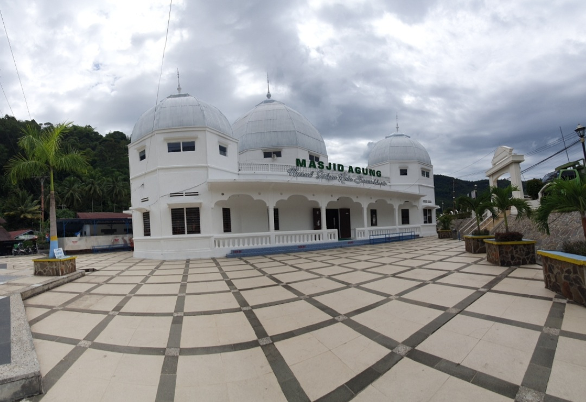
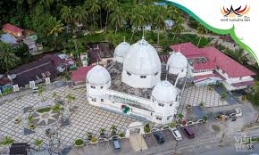
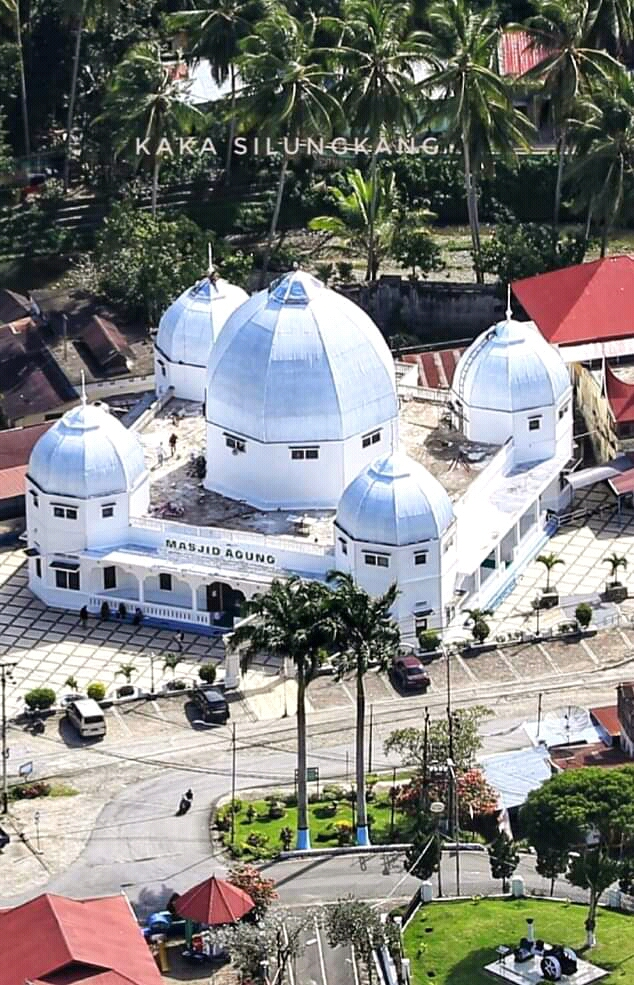
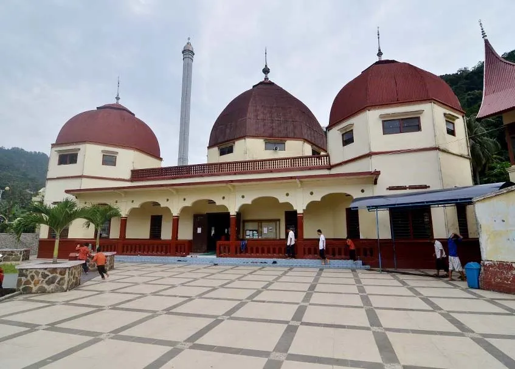

Ikon Religi dan Sejarah Kota Warisan
Masjid Agung Sawahlunto adalah masjid bersejarah yang menjadi ikon religi dan pusat kegiatan keagamaan di Kota Sawahlunto. Dibangun pada masa kolonial Belanda, masjid ini memiliki arsitektur unik yang memadukan gaya Timur Tengah dengan sentuhan Eropa.
Terletak di pusat kota, masjid ini tidak hanya berfungsi sebagai tempat ibadah tetapi juga menjadi destinasi wisata religi yang menarik bagi pengunjung yang ingin melihat keindahan arsitektur dan nilai sejarahnya.
Lokasi: Pusat Kota Sawahlunto
Dibangun: Era Kolonial Belanda
Gaya Arsitektur: Timur Tengah & Eropa
Status: Masjid Bersejarah
Masjid Agung Sawahlunto dibangun pada masa pemerintahan kolonial Belanda sebagai tempat ibadah bagi masyarakat Muslim yang bekerja di tambang batubara Ombilin. Arsitekturnya mencerminkan perpaduan budaya Timur Tengah dan Eropa yang khas pada masanya.
Masjid ini telah mengalami beberapa kali renovasi namun tetap mempertahankan keaslian arsitektur aslinya. Hingga kini, masjid ini menjadi salah satu landmark penting di Kota Sawahlunto.
"Masjid ini menjadi saksi perkembangan Islam di Sawahlunto sejak masa kolonial hingga kini."
Keunikan Masjid Agung Sawahlunto terletak pada perpaduan arsitektur Timur Tengah dan Eropa. Kubah dan menara bergaya Timur Tengah berpadu dengan struktur bangunan yang dipengaruhi arsitektur kolonial Belanda.
Saksi bisu perkembangan Islam di Sawahlunto sejak era kolonial Belanda.
Arsitektur unik membuat masjid ini menjadi latar foto yang instagramable.
Tempat berbagai kegiatan keagamaan dan sosial masyarakat Sawahlunto.
Pagi atau sore hari untuk foto terbaik
Gratis (untuk wisatawan)
24 jam untuk ibadah
Pusat Kota Sawahlunto



